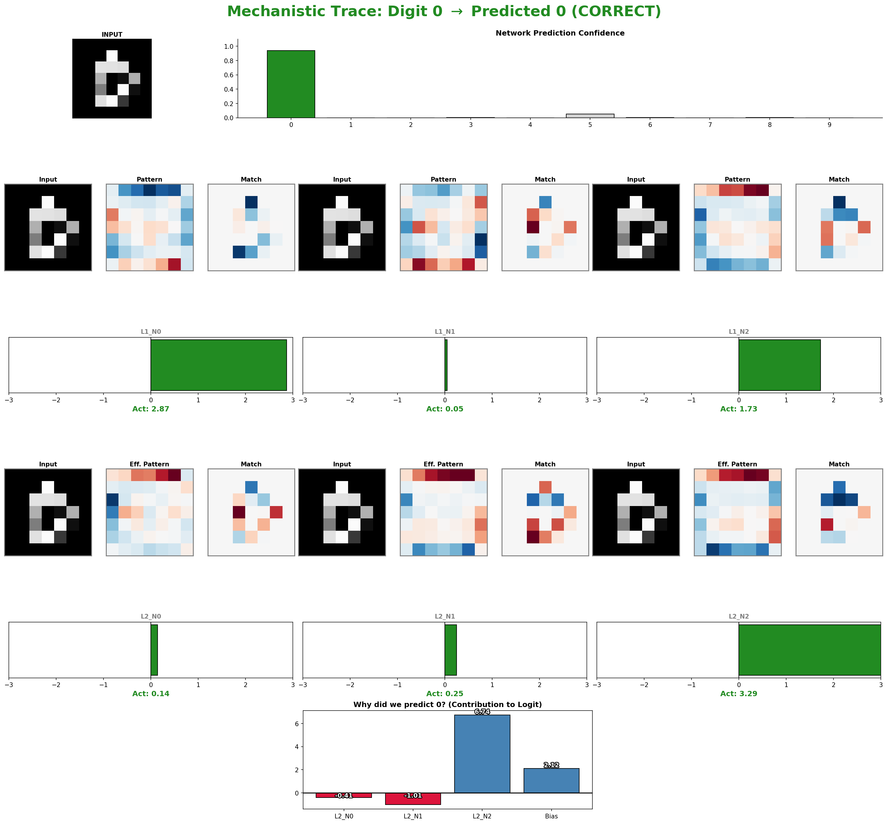
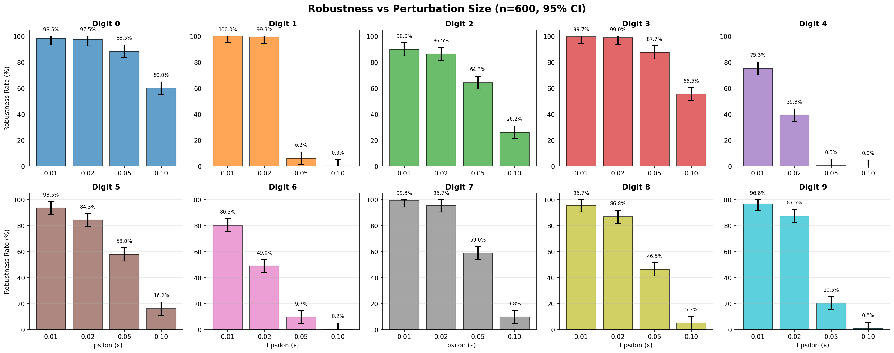

We created a very small neural network with GELU-GELU-Linear architecture (49 → 3 → 3 → 10) for MNIST digit classification, with Softmax for post-processing to obtain class probabilities. This tiny network allows us to build exact polytope representations using linear programming.
A polytope is a geometric region defined by linear inequalities. For neural network verification, we construct a polytope that over-approximates all possible network behaviors for inputs in a given region.
x₀[i] for i = 0..48: Input pixels (constrained to ε-ball around input)a₁[j], z₁[j] for j = 0..2: Pre/post-activation for hidden layer 1a₂[k], z₂[k] for k = 0..2: Pre/post-activation for hidden layer 2a₃[m] for m = 0..9: Output logits (unbounded)x₀[i] ∈ [x₀[i] - ε, x₀[i] + ε] ∩ [0, 1] for all iaℓ = Wℓ · zℓ-1 + bℓ (equality constraints)z = GELU(a)Why it's useful: Any output reachable by the network for inputs in the ε-ball is guaranteed to be in our polytope. This approach, inspired by Singh et al.'s DeepPoly, enables us to analyze network behavior through linear programming. Beyond verification, this representation provides interpretability: we can probe how individual neurons contribute to predictions by equipping the polytope with the right objective functions and doing the optimization.
Current demo uses ε = 0.01, giving 49 input constraints + 6 GELU envelope constraints (2 per neuron × 3 neurons in each hidden layer).
By stepping through the NN, we can understand how the network composes features to make predictions. Each hidden neuron learns interpretable patterns that combine to form digit classifiers. We formally verify these properties with the polytope.
Click on the hidden neurons in the visualization above to see what patterns they detect. The 6 hidden neurons (3 in each layer) learn distinct visual features:

The dashboard shows how Layer 1 neurons detect basic patterns (Frame, Spine, Belt), and Layer 2 neurons combine them with learned weights to produce the final digit 0 logit. The network learns that digit 0 should strongly activate the "Frame" detector while avoiding activation of "Spine" and "Belt" detectors (which would indicate filled regions).
The plot below shows robustness rates (percentage of test samples where the LP makes the correct prediction within an ε-ball) across different perturbation sizes for 600 test samples:

Key findings: The LP maintains high accuracy for small perturbations (ε ≤ 0.02), with varying sensitivity across different digit classes. For example, digit 1 remains highly robust even at ε = 0.02, while digit 4 degrades more quickly. Even more interestingly, the LP appears to be a good classifier for the MNIST problem in and of itself.